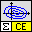
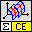
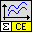
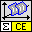

Owning Palette: CE Math
Formula evaluation VIs
| Palette Object | Description | |
|---|---|---|
 |
[ce] Eval X-Y(a,t).vi | Calculates the values of a function ( f(t), g(t) ), where t runs over the specified interval. In addition, the VI allows specifying additional parameters and evaluating them in formulas. |
 |
[ce] Eval X-Y-Z(a,t1,t2).vi | Describes a surface in 3D with two variables running over two different intervals. In addition, the VI allows specifying additional parameters and evaluating them in formulas. |
 |
[ce] Eval y=f(a,x).vi | Calculates values of the given 1D function. In addition, the VI allows specifying additional parameters and evaluating them in formula. |
 |
[ce] Eval y=f(a,x1,x2).vi | Calculates a 2D array of function values defined on a grid. In addition, the VI allows specifying additional parameters and evaluating them in formula. |